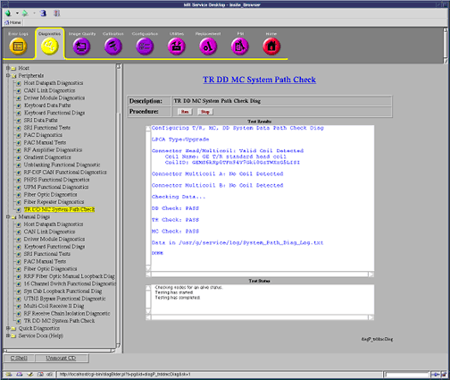

Proprietary to General Electric Company
Direction 5440000, Rev# 5
Signa HDxt Service Methods
Module Version 1.0, Version Date 4/26/07
Proprietary to General Electric Company |
TR DD MC System Path Check
The purpose of this diagnostic is to help the field engineer in troubleshooting faults related to the T/R (Transmit Receive), DD (Dynamic Disable & Direct Drive), and MC (Multi-coil) System Paths.
Ensure no scan is running before running the diagnostic.
If the system is configured for multi-nuclear spectroscopy, please plug in a MNS TR (transmit-receive) switch.
To test for MC Path Shorts or Connector A Head Path T/R Shorts, An appropriate MC or T/R coil must be plugged in.
Start the TR DD MC System Path check by opening the Common Service Desktop, select [Diagnostics], [Peripherals], and [[TR DD MC System Path Check]. See Illustration 1.
Select [Run] to start the diagnostic.
| NOTE: | If the diagnostic must be halted during analysis, select the [Stop] button. |
Illustration 1 shows the resulting output that will be displayed once the diagnostic is complete, if all tests pass. The results are also logged under /usr/g/service/log/System_Path_Diag_Log.txt.
If the diagnostic completes without errors, there are no further actions. If a failure occurs, continue to Step 5.
Review the diagnostic error message in the results window, as well as the system error log and extended error messages for subsequent actions.
The error message in the test results window should state the problem, and what signal path is experiencing it. For more detailed troubleshooting information, refer to TR DD MC System Path Troubleshooting.
| NOTE: | For 1.5T upgrade systems with MNS: If the system has a Bendix connector, the MNS TR switch must be plugged in, or an MNS TR Open fault will be detected. Please verify an MNS TR switch is plugged in before troubleshooting further. |
Perform a TPS Reset after diagnostic is complete.
Illustration 1: TR DD MC System Path Diagnostic Window and Passing Results

None
This diagnostic has the ability to detect the following faults:
| T/R Faults | DD Faults | MC Faults |
|---|---|---|
| Head: Open & Short | Open | Open |
| Body: Open & Short | Short | Short |
| MNS: Open & Short (optional) | High Voltage | Transmit Fault |
| Head and Body Cables Swapped | Receive Fault | |
| Upgrade: Head (Legacy) & Connector A Cables Swapped | Cable Disconnects | |
| Upgrade: Cable Swap |
Upon detecting one of these faults, the diagnostic displays the location of the fault on the diagnostic screen. In addition, the diagnostic also appends detailed information to a text file existing in /usr/g/service/log/ titled System_Path_Diag_Log.txt.
If the diagnostic detects a fault, please refer to TR DD MC System Path Troubleshooting.
None
None